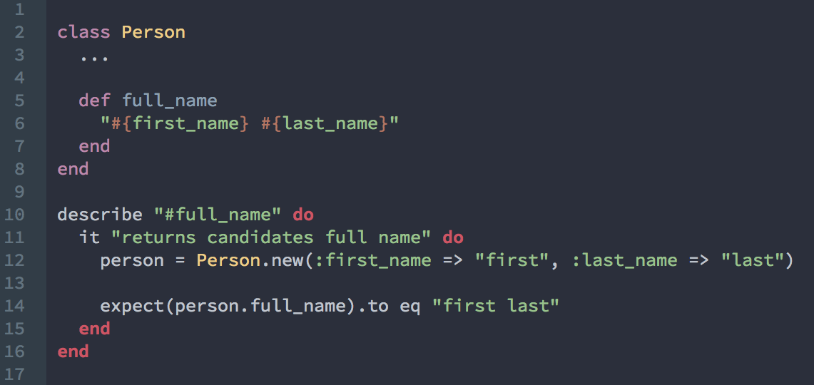
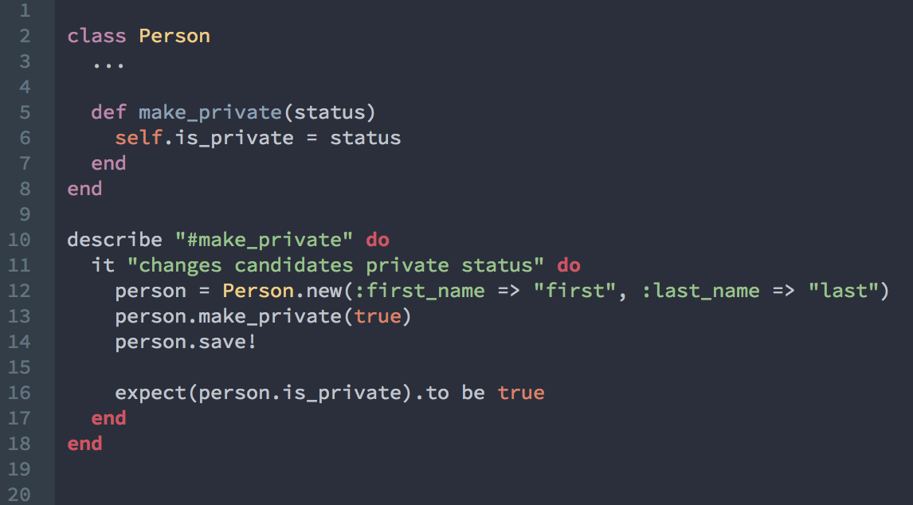
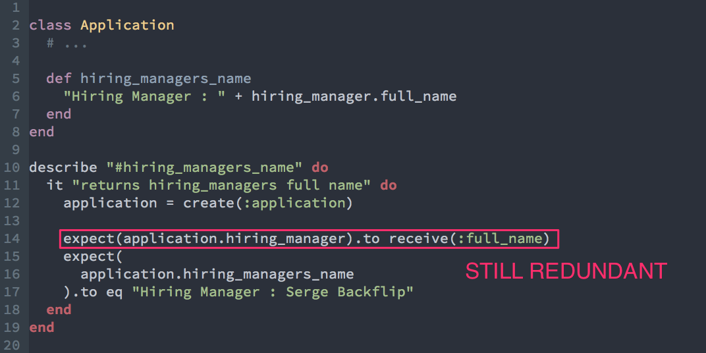

Testing at Greenhouse
Magic Tricks of Testing
Objectives
part 1
- Maximizing coverage with the fewest tests possible
- Testing everything once
- Testing the interface and not the implementation
part 2
- How to mock reliably
Bad tests are:
Slow
Fragile
Expensive
Unit Tests: Goals
Thorough
Stable
Fast
Few
Test Incoming Query Messages
Test incoming query messages by making assertions about what they send back
Incoming Command Messages
Test incoming command messages by making assertions about direct public side effects
Receiver has sole responsiblity for asserting the result of direct public side effects
Messages sent to self

Messages sent to self
Outgoing Query Messages
Outgoing Query Messages
- Over Specification - Adds cost with no benefits
- Binds you to the implementation details of the hiring_manager_name method
- If a message has no visible public side effects, the sender should not test it. That's the responsibility of the receiving class
Outgoing Command Messages
class Department
# ...
def update_name(new_name)
old_name = name
self.name = new_name
self.save!
ChangeLog.create_entry(self, old_name, new_name)
end
end
it "updates name and create a changelog entry" do
department = create(:department)
expect { department.update_name("Engineering") }.
to change { department.name }.
from("Web Development").
to("Engineering")
# make an assertion about the db for ChangeLog?
end
- Is this Departments responsibility?
Outgoing Command Messages
class Department
# ...
def update_name(new_name)
old_name = name
self.name = new_name
self.save!
ChangeLog.create_entry(self, old_name, new_name)
end
end
it "updates name and create a changelog entry" do
department = create(:department)
# this message MUST get sent
expect(ChangeLog).to receive(:create_entry).
with(department, "Web Developent", "Engineering")
expect { department.update_name("Engineering") }.
to change { department.name }.
from("Web Development").
to("Engineering")
end
- Department IS responsible for sending create_entry to the receiver
- The public api DEPENDS on the create_entry message being sent
- Expect to send outgoing command messages
Can we Mock reliably ?
Mocks - assertion that a message is received.
=> Returns nil by default
expect(User).to receive(:full_name)
Stub - When this message is received
=> provides a specific return.
allow(User).to receive(:full_name).and_return('first last')
Mock and Stub - Assertion that a message is received
=> provides a specific return.
expect(User).to receive(:full_name).and_return('first last')
Partial Doubles & verifying partial doubles
class Department
# ...
def update_name(new_name)
old_name = name
self.name = new_name
self.save!
ChangeLog.create_entry(self, old_name, new_name)
end
end
# department_spec.rb
it "updates name and create a changelog entry" do
department = create(:department)
expect(ChangeLog).to receive(:create_entry).
with(department, "Web Developent", "Engineering")
# ...
end
# spec_helper.rb
RSpec.configure do |config|
config.mock_with :rspec do |mocks|
mocks.verify_partial_doubles = true
end
end
- Protects against api changes
- Protects against typos
Mocking External Dependencies
class UserEmailer
def initialize(user)
@user = user
end
def email
send_email_to(user.email)
end
end
### Factory Girl
it "sends email to user" do
user = create(:user, :email => "serge.backflip@example.com" )
user_emailer = UserEmailer.new(user)
expect(user_emailer.email(user.email)).to deliver_to(
"serge.backflip@example.com"
)
end
### Test Double
it "sends email to user" do
# mocking external dependencies makes the test faster.
# testing user, is *not* the responsiblity of UserEmailer.
# all we need is an object that responds to email
user = double("user")
allow(user).to receive(:email).
and_return("serge.backflip@example.com")
user_emailer = UserEmailer.new(user)
expect(user_emailer.email(user.email)).to deliver_to(
"serge.backflip@example.com"
)
end
### Instance Double
it "sends email to user" do
user = instance_double("User")
allow(user).to receive(:email).and_return("serge.backflip@example.com")
user_emailer = UserEmailer.new(user)
expect(user_emailer.email(user.email)).to deliver_to(
"serge.backflip@example.com"
)
end
# if spec fails
# output: "User does not implement: email"
Protects against api changes
class_double works the same way for class methods
Mocking external dependencies with Distant Side Effects
class ApplicationController
def accept
# ...
application.hire(application_details)
end
end
it "accepts application" do
# ...
allow(application).to receive(:hire).and_call_original
end
Protects against distant side effects that may error out
Summary
- Test everything once
- Test the public interface and not the implementation
- Prefer test doubles over factory girl or actual objects
- Prefer instance_double and class_double over doubles
- Understand these "rules" but use your best judgement for more complex test cases
To Be Continued..?
- Controllers and dependency management
- Understanding waiting behavior to avoid finicky capybara specs
- Making selenium/feature specs readable, reliable, and performant